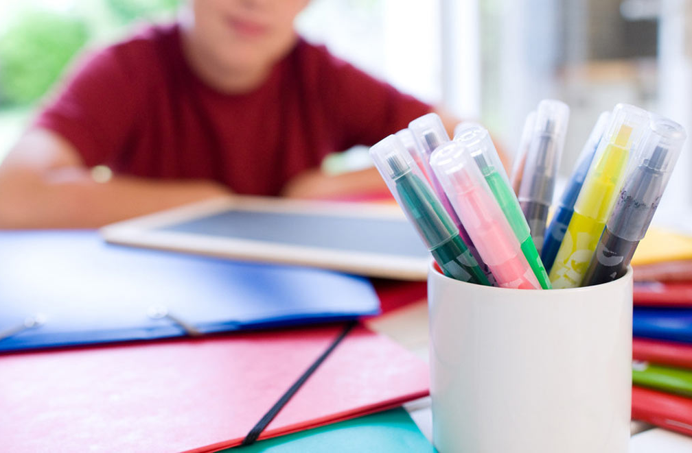

La Red de Apoyo Escolar Comunitario es una plataforma web solidaria cuyo objetivo es facilitar el acceso gratuito a tutorías escolares a niños, niñas y adolescentes en situación de vulnerabilidad educativa. Nacemos de la convicción de que la educación es un derecho, no un privilegio, y que toda persona merece tener las herramientas para desarrollar su potencial, independientemente de sus recursos económicos.
Nuestra misión es reducir la brecha educativa mediante el fortalecimiento del acompañamiento escolar, promoviendo una red de solidaridad basada en el intercambio humano y el compromiso con la comunidad.
Aqui encontrarás más información acerca de nuestra red de apoyo escolar.
Más informaciónPuedes contactar con nosotros cuando quieras pulsando aqui.